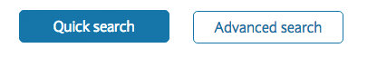

UpFront conference 2016
03 Jun 2016
On Friday the 27th of May I attended the front end developers conference UpFront in Manchester. There were 7 speakers along with 3 flash talks on a range of subjects including Accessibility, Design patterns, legacy JavaScript and component systems.
Below are just a few of the key points I took away from these talks...
Accessibility starts with design
Derek Featherstone spoke about web accessibility and techniques to create a better experiences for everyone. Much of this talk focused on the role design can play in creating inclusive user journeys.
Design for low vision
When designing interactive web components such as login areas or registration forms we should consider how the flow of the page could change for users with impaired vision as well as just for those with screen readers. By creating a flow that works at the default resolution as well as when zoomed can make the user journey more intuitive for everyone.
Inclusive call to actions
We often produce designs that are intended to drive the desired response from a user. Accent colours for example can be used to make key buttons such as ‘Submit’ or ‘Continue’ stand out from less desired choices like ‘Cancel’ or ‘Go back’.
An inclusive design should strive to create clearer distinctions between these calls to action. Using the same button example as above, layout, size or text could also be used to guide the user.
Good
Bad 
Tables
Complex data or information is often displayed in tables, these tables can become very difficult to read for users on smaller screens or who need to zoom in to read content. When laying out information tables designers should consider how to keep the information readable if the title cells are no longer on screen or all of the columns are not visible.
The most important message I took from this talk is that accessibility can not simply be added in at the development phase of a project. It has to be considered every step of the way and be a key part of the design process.
The web is not dead
Peter Gasston’s talk discussed the future of the Web amid threats from emerging technologies including native apps, closed platforms and messenger bots.
Threats
The future of the web has come into question over recent years, a few of the reasons for this are listed below….
- Centralised platforms such as Medium and Facebook.
- App first design and development approaches.
- Slow and poor performing websites.
Despite these challenges the web is still hugely popular, Chrome’s mobile browser went from 4 million to 8 million downloads from November 2014 to November 2015. Both Flipkart and Myntra famously shut down there mobile sites and went with an App only approach only to later backtrack after suffering poor downloads and a loss of sales.
“The best way to reach new customers is through the open web” - Jason Karaian.
There are numerous emerging technologies and browser enhancements that can help to keep the web alive and thriving…
Offline capabilities - HTML5 introduced a number of features to make the offline web a reality including application cache, localStorage and web SQL & indexed database.
Service Workers - A service worker is a script that is run by your browser in the background. The script creates opportunities to introduce new features including Push notifications, Geofencing and Background Sync.
Physical web - The physical web enables quick and seamless interactions with physical objects and locations, bridging the gap between the digital and physical worlds.
WebAssembly - WebAssembly is a binary format for the Web, allowing developers to write in a low-level programming language for Web browsers. WebAssembly provides low-level building blocks for developers so they can build without the restrictions that JavaScript imposes.
Web components - Web Components are re-usable UI widgets. An existing Web Component can be used without writing code, simply by adding an import statement to an HTML page.
Progressive web apps
Progressive web apps are key to the survival of the web, they provide a viable alternative to native apps and have some key benefits. Progressive web apps look and behave exactly like native apps with all the features we have come to expect but without the need to deploy through an app store.
Advantages of Progressive web apps include…
- No installation required
- Quicker/easier to deploy updates and fixes
- No manual user updating
- One code base across all devices and operating systems
- Less space taken up on the users device
Pages are dead
So the web might not be dead just yet, but web pages, or the concept of them certainly should be. Charlotte Jackson discussed the transition from pages to patterns and the process of creating a pattern or asset library. Working in this way can have many benefits for a projects long term health.
To create a pattern library each section of a design is created alone without constraints. Working this way creates a series of flexible and reusable modules that can adapt to fit any space.
For the pattern library to stand the test of time, each component needs a name that describes its function not its appearance.
Good
.button-primary {
}
Bad
.button-blue {
}
Benefits of working with pattern libraries
- Improved usability
- Cleaner code base
- Easier and faster to implement changes
- Improved Consistency
- Efficient training for new staff
- Improved deployment processes
Styleguides
This modular approach to design feeds directly into the development process of building re-usable component blocks. These components are stand alone blocks of code, that can be used in any location at any viewport.
Creating a library of web modules in this way allows large scale organisations to improve consistency across multiple sites and platforms. This was discussed in more detail by Alice Bartlett along with techniques for implementing and maintaining these blocks of code.
The future
Emerging concepts such as Element Queries could further develop this approach, keeping all of the styling in one place and allowing the module to adapt its styling in a way that suits the content and not the page constraints or pre-set media queries.
Leave it better than you found it
Rebecca Murphey’s talk centered around the common problem of working with legacy code and platforms. “Making it better without making it over” discussed different approaches when, for whatever reason starting again just isn’t an option.
Guardrails
The first step when working with any code base, legacy or not should be to ensure all the necessary safety nets are in place to ensure nothing you commit can break the live app or website.
Plan for the future
One the guardrails are in place you can work towards improving the quality of any new features or code. By adding a task runner for example, all future commits can be monitored and ran through any number of checks from code linting to standardising commit messages. Processes like this allow for the code base to be gradually improved upon without the need for wholesale changes.
Although heavily focused on Javascript the concepts discussed could also be applied to legacy CSS. By including visual regression testing in the build process we can check that CSS changes have not had any unwanted effects. Tools like Stylelint can then be used to ensure the new CSS meets a set level of standards. The linting process can be eventually rolled out to include all of the legacy code.
PostCSS can also be used to introduce modern CSS practices, without a full code rewrite. A key feature of PostCSS is its ability to be seamlessly integrated into existing projects. Working in this way opens up the possibility to introduce modern CSS practices such as Variables, Mixins, Functions and Element Queries without investing time in a full CSS re-write. By adding in these features the code base will become easier to work with and maintain moving forwards.